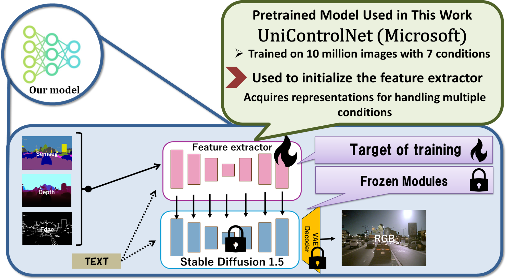
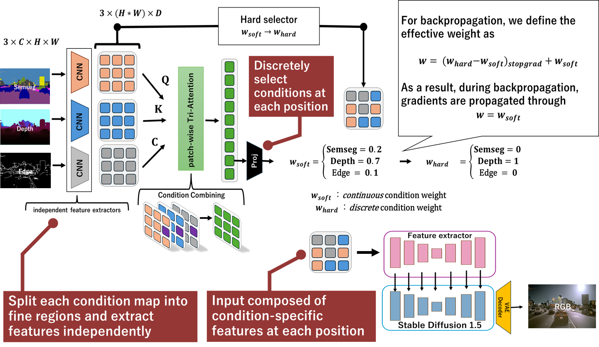
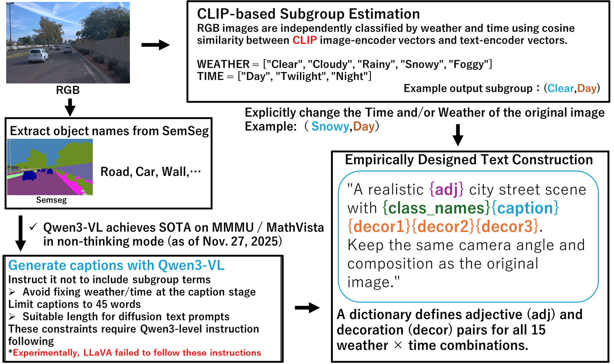

Method
The method is built around a reusable generation pipeline, Uni-ControlNet-compatible initialization, and explicit condition-conflict suppression through PAM.
1. Multi-condition pipeline
RGB images are converted into semantic segmentation, depth, and edge conditions. Prompts are generated to change appearance without rewriting layout.
2. Pretrained control prior
Strong controllable diffusion representations are reused instead of relearning everything from scratch on a smaller autonomous-driving dataset collection.
3. PAM conflict suppression
PAM selects locally effective conditions so that low-frequency geometry and high-frequency contours do not collapse each other in the shared feature space.

Overall multi-condition generation pipeline.

Model detail based on a Uni-ControlNet-compatible controllable diffusion backbone.

PAM explicitly targets local inter-condition conflict suppression.

Prompt generation pipeline with CLIP/open_clip classification and Qwen3-VL captioning.